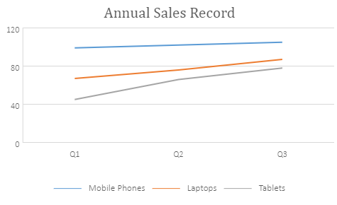
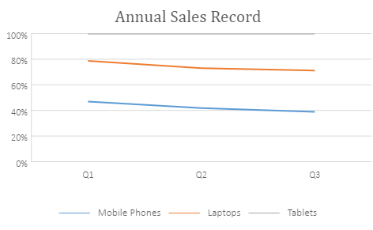
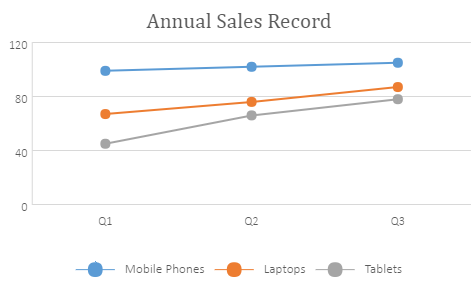
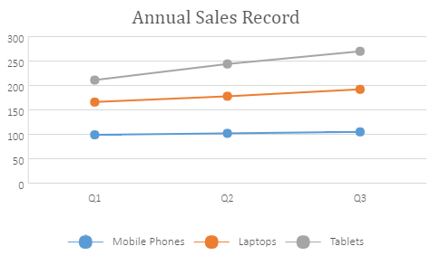
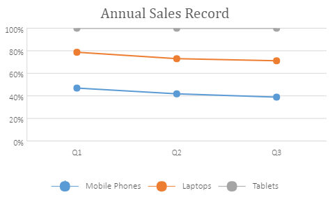

A line chart is extensively used to visualize continous data over time on an evenly scaled axis. These charts are ideal for analysing trends in data at equal time intervals, like months, quarters, or fiscal years.
The data arranged in columns or rows of a worksheet can be plotted in a line chart. In a line chart, category data is distributed evenly along the horizontal axis, and all the value data is distributed along the vertical axis.
SpreadJS supports the following types of line charts. In the examples shown below, the trend of annual sales record for Quarter 1, Quarter 2 and Quarter 3 for different categories of gadgets: Mobile Phones, Laptops and Tablets is depicted in different types of line charts.
This chart depicts the data values plotted over time to display the trends.
An image of the line chart is shown below:

This chart displays stacked line to depict the trend of the contribution of each data value or ordered category over different time intervals.
An image of the stacked line chart is shown below:This chart displays the trend in terms of the percentage that each data value or ordered category has contributed (to the whole) over different time intervals.
An image of the 100% stacked line chart is shown below:

This chart displays data values shown with markers. It is ideal to use this chart when there are many categories or the values are approximate.
An image of the line chart with markers is shown below:

This chart displays data values with markers, typically showing the trend of the contribution of each value over time or evenly spaced categories.
An image of the stacked line chart with markers is shown below:

This chart displays individual data values with markers, typically showing the trend of the percentage each value that has been contributed over time or evenly spaced categories. It is ideal to use this chart when there are many categories or the values are approximate.
An image of the 100% stacked line chart with markers is shown below:

This code shows how to add different types of line charts in a spreadsheet.
| JavaScript |
Copy Code
|
|---|---|
|
var chart_line, chart_lineStacked, chart_lineStacked100, sheet; window.onload = function () { // Prepare data for chart { { // Add line chart // Add lineStacked chart // Add lineStacked100 chart sheet.resumePaint(); |
|